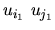
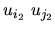
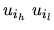
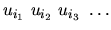

| Hamiltonian Cycle |
A few definitions first:
The problem is: write a program that, given a dense undirected graph G = (V; E) as input, determines whether G admits a Hamiltonian cycle on G and outputs that cycle, if there is one, or outputs ``N'' if there is none.
n1


%
n2
%
where ni is the number of vertices (0 < ni < 256) and  are integers between 1 and n indicating that there exists an edge between vertex uih and uil

or containing:
N
4 1 2 2 3 2 4 3 4 3 1 % 6 1 2 1 3 1 6 3 2 3 4 5 2 5 4 6 5 6 4 %
1 2 4 3 1 1 3 2 5 4 6 1